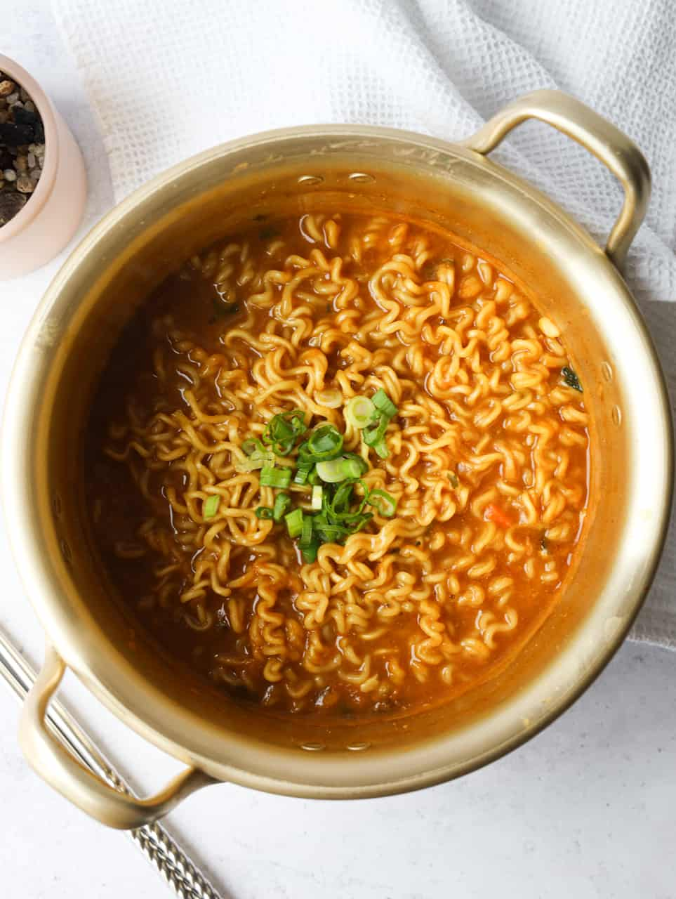

Curry Ramen

Description
Curry ramen is a delightful fusion dish that combines the comforting warmth of
Japanese ramen with the rich and aromatic spices of curry. This fusion takes the form
of a flavorful broth, tender noodles, and a medley of toppings, all infused with
the captivating essence of curry spices.
Ingredients
- Spicy soup-based instant Ramen with instant seasoning
- Dried vegetable flakes (optional)
- Japanese curry block or powder
- Garlic
- Japanese mayo
- Green onions
- Water
Steps
- Mix mayo, minced garlic, instant ramen seasoning and dried flakes into a paste in a small pot.
- Pour cold water into the pot, and mix until the paste has dissolved.
- Bring it to a boil, add block of japanese curry mix while stirring to dissolve.
- Once dissolved, boil your ramen noodles for 2-3 minutes.
- Garnish with green onions and enjoy.
This recipe is from Christie (Christie at home), and you can see the full guide
here.
<< Back to main page
<< Fried Rice
>> Lasagna